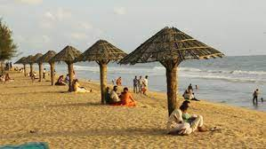
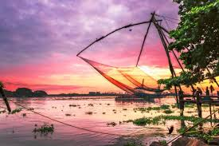
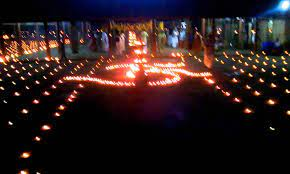
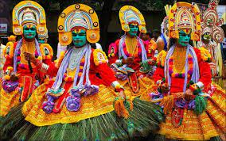

Ernakulam, the urbane face of Kochi, is a bustling place with crowded shopping malls, restaurants and high-rises. On the cultural, political, commercial and industrial fronts, Ernakulam is on the cutting edge, as far as the State is concerned.Ernakulam refers to the eastern, mainland portion of the twin cities of Ernakulam-Kochi in central Kerala, India. Located on the coast of the Arabian Sea, Ernakulam is a booming business metropolis. It is often referred to as the commercial capital of Kerala. Ernakulam has been a part of human settlements since the Stone Age. Rock-cut caves and dolmens are still a part of this city. Ernakulam was ruled by the Chera Dynasty and later, by the Kingdom of Cochin (Perumpadapu Swaroopam).

BOLGATTY PALACE
This is the oldest palace built by the Dutch outside the Kingdom of Holland. The palace was built by a Dutch merchant in 1744. Later, it was renovated with a magnificent lawn and a number of reforms. The palace served as the official residence of Dutch Governor.
HILL PALACE
Hill Palace, built in 1865, is the largest archaeological museum in Kerala and the administrative center of Cochin. Includes the Hill Palace Archaeological Museum, Heritage Museum, Deer Park, Prehistoric Park and Children’s Park. There are many medicinal plants around the palace. The Museum Hill Palace is now open to the public for days on Mondays.

CHERAI BEACH
It is a favorite haunt of those looking for a relaxing swim with the backdrop of coconut groves being the added incentive. It provides a wonderful view of the famous Chinese Fishing Nets or Cheena Vala well.

FORT KOCHI
Fort Kochi, the western part of the Kochi city of Ernakulam district in Kerala. It is about 12 km away from Ernakulam Town. Fort Kochi has played an important role in the history of Kerala. Fort Kochi also has several attractions like the Santa Cruz Basilica.

ALUVA SHIVARATHRI
Aluva Sivarathri Festival is the Sivarathri celebrated in Aluva Mahadeva Temple in Aluva, Kochi in the state of Kerala, India[1] The celebration of Sivarathri in Aluva is very famous in Kerala. The month of Kumbham is noted for the Sivarathri festival which falls in February – March.
